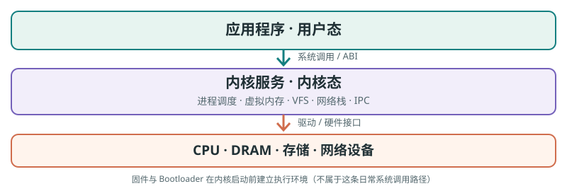

把一个程序放在 CPU 上运行，谁决定它什么时候得到处理器、能访问哪些内存、怎样读写磁盘？如果没有操作系统，计算机仍然可以运行固件、裸机程序或专用控制代码；操作系统不是让 CPU “知道要执行什么”的唯一办法。它的价值在于：把有限的硬件资源组织成可共享、可保护、可编程的环境。
本章先建立一个可检验的模型：应用提出请求，操作系统提供抽象并管理资源，硬件执行最终操作。这个模型比“操作系统是大管家”更有用，因为它能帮助我们追踪每个接口背后的边界。

一、从ENIAC到现代OS：一部硬件催生软件的进化史
操作系统并不是某一天被一次性发明出来的。它逐步吸收了作业管理、设备控制、内存保护、并发执行和交互服务等能力。历史脉络可以帮助我们理解这些机制解决了什么问题，但不同系统的演进并非完全相同的单线过程。
1. 手工操作与早期计算机
早期计算机的程序装载、接线、介质更换和运行安排常常需要操作员参与。ENIAC于1940年代投入使用时，并没有今天意义上的通用操作系统。早期“没有OS”不代表机器不能执行程序，而是程序员和操作员需要承担更多设备配置与作业切换工作。
2. 批处理与监控程序
批处理把多个作业组织起来，减少人工逐个启动任务的成本。常驻监控程序可以读取作业控制信息、装入程序并在作业结束后转交给下一个任务。IBM System/360的软件体系是这一时期的重要发展，但不要把某一个监控程序说成现代操作系统的唯一“起点”。
3. 多道程序与分时
多道程序允许多个作业同时驻留内存。当一个作业等待 I/O 时，调度器可以让另一个可运行作业使用 CPU。分时系统进一步通过抢占和时间片，让交互用户获得可感知的响应。这里的关键变化不是 CPU 变快，而是系统开始管理多个执行流之间的资源竞争。
4. UNIX、个人计算机与移动系统
UNIX 在 1960 年代末于 Bell Labs 开始发展；Linux 内核于 1991 年公开发布。此后，桌面、服务器、移动设备和微控制器形成了不同的系统生态。今天的操作系统并不只有“PC 上的 Windows”和“服务器上的 Linux”：手机、路由器、汽车控制器和微控制器使用的系统，在功能范围和隔离能力上都可能不同。
读历史时要问：当时最昂贵的资源是什么？作业切换为什么困难？用户需要什么样的响应？不要把“年代—产品”背成列表，要把每项机制与它解决的问题连起来。
二、操作系统的四大角色
从工程角度，可以把操作系统的职责归纳为资源管理、抽象、保护和控制。它们相互交织，并不是四个彼此独立的模块。
| 职责 | 它解决的问题 | 可以观察的例子 |
|---|---|---|
| 资源管理 | 多个执行流如何分享 CPU、内存、存储和设备？ | 调度器、页分配器、I/O 队列 |
| 抽象接口 | 应用怎样在不理解每种设备细节的情况下请求服务？ | 进程、文件描述符、套接字、虚拟内存 |
| 保护与隔离 | 一个程序怎样避免任意读写另一个程序或内核的内存？ | 特权级、页表权限、凭据和访问控制 |
| 控制与协调 | 事件发生时，系统怎样切换执行并保持一致性？ | 系统调用、中断、异常、同步原语 |
以 read(fd, buf, n) 为例：应用通过文件描述符表达“我要读”；系统调用入口检查参数和权限；VFS 根据文件对象分派操作；具体文件系统或设备驱动完成后续工作。并非所有设备都以普通文件呈现，也不是每次 read() 都会访问物理磁盘——数据可能来自页缓存、管道、终端或网络套接字。
“一切皆文件”是 Unix/Linux 接口设计中的重要思想，但不是对所有内核对象的字面描述。理解抽象接口时，要同时看到它隐藏了哪些细节，以及哪些语义仍然暴露给应用。
三、操作系统类型全景图
下面的分类是按系统目标和使用方式划分的教学坐标，不是互斥的产品标签。一台 Linux 服务器可以同时支持多用户分时、批处理作业、网络服务和实时性要求较高的工作负载。
| 视角 | 主要目标 | 典型机制或场景 |
|---|---|---|
| 批处理 | 按作业队列提高吞吐量 | 作业提交、队列调度；现代 HPC 集群仍有批作业系统 |
| 多道程序 | 等待 I/O 时让其他任务使用 CPU | 中断、DMA、阻塞与唤醒 |
| 分时系统 | 为交互任务提供响应和公平性 | 抢占式调度、时间片和优先级 |
| 实时系统 | 在约束时间内完成任务 | 固定优先级、截止时间分析、可预测的中断延迟 |
| 网络与分布式系统 | 通过网络共享资源或协作完成任务 | 远程文件、消息、服务发现、分布式协调 |
实时系统不是“跑得最快”
实时性关注的是结果是否在截止时间前产生，而不只是平均执行速度。硬实时系统对错过截止时间有严格的系统级后果；软实时系统允许偶发超期，但质量会下降。固定优先级抢占式调度是许多小型 RTOS 的常见策略之一，例如 FreeRTOS 的默认单核调度策略；具体行为还取决于配置和端口实现，不能推广到所有 RTOS。
分布式操作系统与“使用网络的操作系统”也不是同义词。网络操作系统可以让用户访问远程服务；分布式系统则进一步处理多台机器之间的命名、协调、故障和一致性问题。
四、主流操作系统一览
| 系统 | 更准确的架构描述 | 阅读时应注意 |
|---|---|---|
| Linux | 宏内核，支持可加载内核模块 | 模块化组织不等于微内核；模块仍在内核特权域中执行 |
| Windows NT | 具有内核、执行体和多种驱动框架的分层内核架构 | “混合内核”是常见分类标签，比较时应看具体组件边界 |
| macOS / XNU | Apple 将 XNU 描述为结合 Mach、FreeBSD 组件和 IOKit 的混合内核 | Mach 与 BSD 子系统并非全部运行在用户态 |
| FreeRTOS | 面向嵌入式设备的小型实时内核 | 不要仅凭代码规模把它归类为微内核；端口和 MPU 支持会影响隔离能力 |
| Android | 基于 Linux 内核，并配有 Android 用户空间、运行时和 IPC 框架 | Android 不是“换皮 Linux 桌面”；应用沙箱还依赖权限、UID、SELinux 等机制 |
这些标签帮助我们建立比较框架，但不能替代实现细节。比如，Linux 支持动态模块加载，并不意味着模块拥有独立的故障域；XNU 含有 Mach 组件，也不意味着 macOS 是由一组纯用户态服务拼成的传统微内核系统。
Apple 的 XNU 源码说明明确列出了 Mach 子系统、BSD 子系统和 IOKit；FreeRTOS 的调度文档则说明其默认单核调度策略与配置选项。
五、结语与下一章预告
把本章压缩成一句话：操作系统通过抽象接口管理共享资源，并借助硬件保护机制限制程序能做什么。历史告诉我们这些机制为何出现；系统分类告诉我们设计目标如何不同；具体产品则提醒我们，架构标签必须回到真实实现来验证。
观察一台正在运行的 Linux 系统
uname -srmo
ps -eo pid,ppid,stat,comm --sort=pid | head
cat /proc/meminfo | head输出会随发行版、内核版本和当前负载变化。可选地安装 strace 后，运行 strace -e trace=openat,read,write -o /tmp/ls.trace ls，再检查跟踪文件，观察应用如何通过系统调用请求内核服务。
下一章转向硬件：指令集、存储层级和中断机制，解释操作系统依赖哪些处理器能力。
本章自测 · 从概念走向验证
用 read() 说明应用、系统调用、内核子系统和设备驱动之间的关系。再解释为什么 read() 不一定访问物理磁盘。
查看思考提示
从文件描述符开始，区分页缓存命中、普通文件、管道和设备文件。